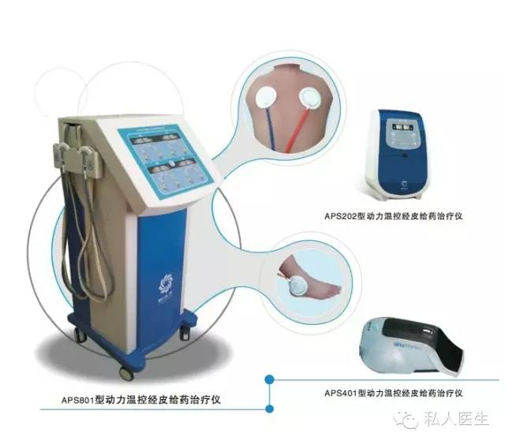
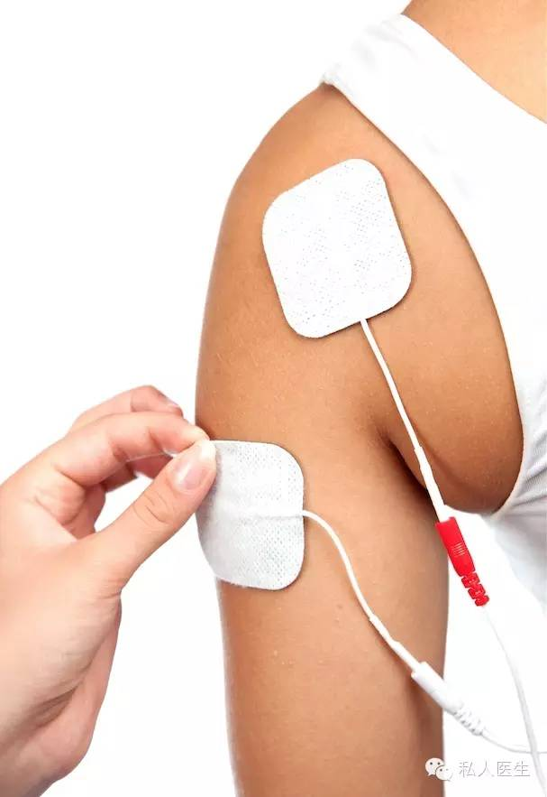

三伏灸是中医传统的治疗方法。夏季人体阳气为四季最高峰，尤其是三伏天，肌肤腠理开泄，肌体阳气充沛，体表经络中气血较其他季节旺盛。慈铭奥亚中医医学中心王建平主任表示：此时选取正确的穴位贴敷，则药物最易由皮肤渗入穴位经络，通过经络气血直达病处。尤其对治疗颈、肩、腰腿疼、女子宫寒、慢性支气管炎、哮喘、顽固性失眠、运动性损伤等有非常显著的疗效。
如今，新一代高科技三伏灸已面市，其创新性引入动力控温经皮给药系统（transdermal drug delivery systems, 简称 TDDs），可让药物通过皮肤吸收进入人体血液循环，达到有效血药浓度、实现疾病治疗或预防的目的，治愈率可达90%以上。  接受治疗者通过中医经络检测，医师了解其具体身体情况，个性化有针对性地将中药合理配伍，在治疗过程中动力控温经皮给药，让药物成份全方起效，效果是传统三伏灸的20~30倍，且持久有效。在治疗的同时，还可增强接受治疗者的病灶组织微循环，加速营养物质的吸收以及炎性物质和代谢物质的排出，因此同时具有排出毒素和摄入药物两种作用。

肝火旺是风寒湿暑燥火等邪气所致，三伏时人体正处于散发的时令，天时的阳气与三伏灸的纯阳之气，进入人体，那么，风、寒、湿、暑、燥、火等邪气被天地之双重阳气赶出体外，因此，血液越来越清净，身体得以轻松，心胸逐渐开阔，病痛逐渐解除，理解力逐渐增强，智慧越来越多，身心清净，身体轻松，宁静自然。所以，三伏天贴三伏灸即能祛病、又能强健身心，真正意义的修心养性。 4、末伏：2015年8月12日-2015年8月21日 三伏日是三伏灸治疗较为理想的时间窗，在此时间疗效可能更好;每伏入伏的前一天，当天，后一天，连贴三贴，共贴十二贴，效果更佳。当然，其他时间，只要患者的体质适合，也是可以做三伏灸治疗的。
推荐阅读：